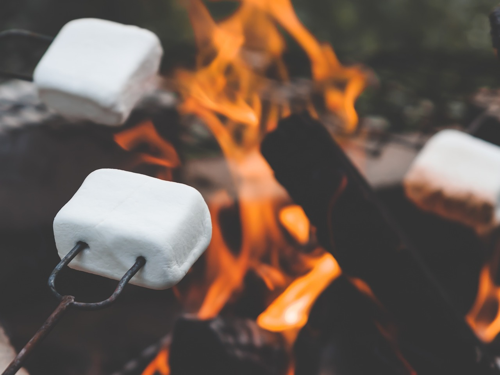
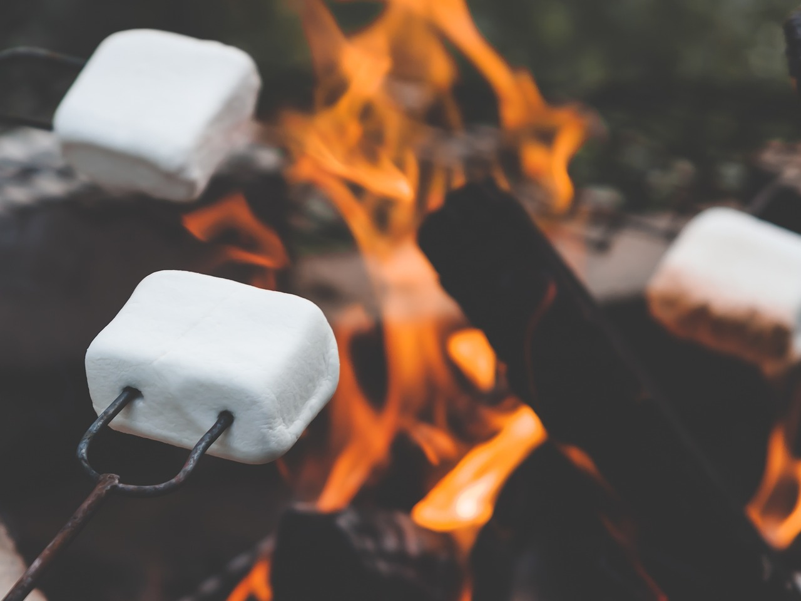

What’s camping without a few fun activities? In the morning you can go for a hike! Good for those who want to get their steps in or spend time in the wake of nature. In the afternoon you can go rock climbing or kayaking to cool off in the hot sun, and at night light a fire at your campsite and enjoy a roasted marshmallow or hot dog while you watch a movie of your choice on your projector.
Go BacK To Top